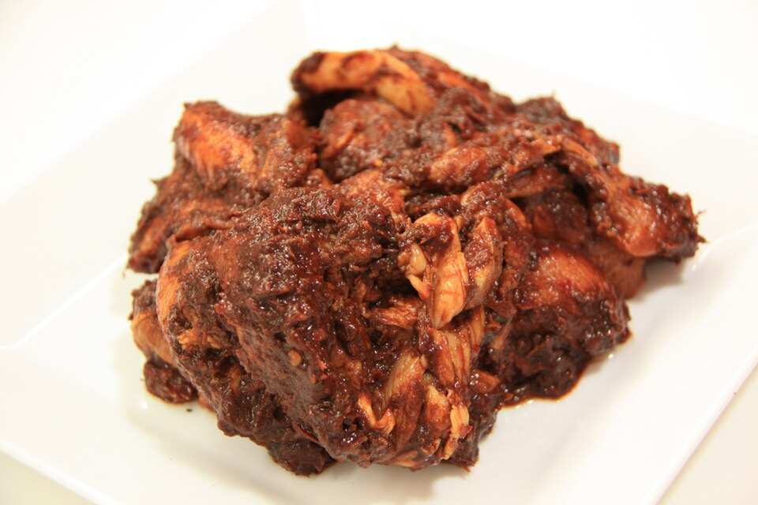

Pork Al Pastor Recipe

A delicious bowl of pork al pastor!
Ingredients
- 8 dried guajillo peppers
- 2 lb pork shoulder/butt cut into~ 1/4" slices, boneless
- 8 cloves garlic peeled
- 7 oz chipotle peppers in adobo 1 can
- 1 tbsp sugar
- 2 tbsp achiote paste 1.75oz/half package
- 13.5 oz pineapple chunks fruit and juice separated, 1 can
- corn or flour tortillas warmed, as needed
Steps
- Soak the guajillos in a small bowl filled with hot tap water for 15 mins. You can either remove the stems and seeds beforehand, or wait til the peppers are soft and pliable, hold them by the tip, upside down, over the sink, and cut the stems off. The seeds should fall right out.
- Meanwhile, season the pork generously with salt.
- Add guajillos, garlic, chipotle in adobo, sugar, achiote paste, and 1/2 cup pineapple juice to a blender and blend into a smooth marinade.
- Marinate the pork for at least 30 mins and up to 24 hours in the fridge.
- Preheat your oven to 500°F. Arrange the pork in a single layer on another baking sheet. Broil the pork until the edges and corners start to char, about 20 minutes.
- While you wait for your pork to finish, arrange drained pineapple chunks in a single layer on a foil lined baking sheet. Remove the pork and broil pineapples until charred, another 15 minutes.
- Slice meats, fry up, and make tacos.
Home